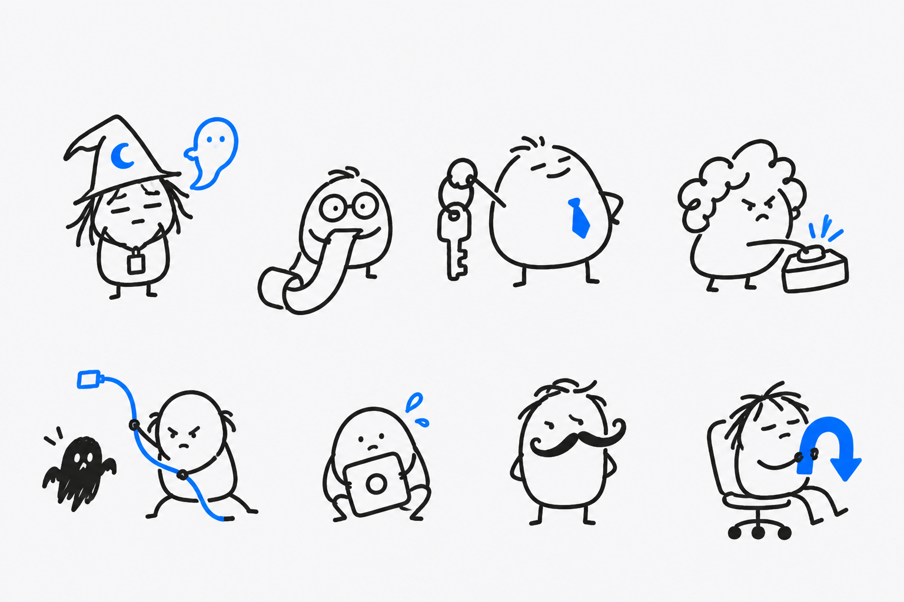

QUESTIONABLE HIRES개발자 에이전트 스킬 / 8인 팀
이걸 뽑네.
근데 일을 하네.
전임자의 코드를 깨우고, 테스트의 거짓말을 잡고,
금요일 배포에서 월요일의 나를 구합니다.
채용 과정은 의문인데, 맡기는 일은 분명합니다.

인사팀도 설명을 포기했습니다.FOR CODEX & SKILL-COMPATIBLE AGENTSSCROLL TO MEET THE TEAM ↓
01 / 직원 명부각자 한 가지는 확실하게 합니다.
이력서보다
할 일을 보세요.
필요한 순간에, 필요한 한 명만.
직원을 선택하면 실제 요청 예시가 나옵니다.
오늘의 업무 지시실제 실행 예시 ↗
캐릭터는 이상해도,
일하는 기준은 분명하게.
01추측에는 실험을.캐시 탓이라는 말도 확인부터 합니다.
02수정에는 영수증을.고치기 전 실패, 고친 뒤 통과를 봅니다.
03작은 일은 작게.버튼 하나 고치다 집을 다시 짓지 않습니다.
02 / 검증 기록개발 프리뷰
말보다 기록.
좋았던 결과도, 불리했던 결과도 공개합니다.
팀 전체의 일반적인 효율 향상은 아직 미입증입니다.
스킬은 작업 방식을 안내합니다. 결과는 모델, 도구 접근, 프로젝트와 사용자 지시에 따라 달라집니다.
03 / 채용 절차면접은 생략합니다.
일단 한 명,
출근시켜 보세요.
Node.js/npm과 Git이 있다면 아래 명령으로 시작하세요.
설치할 스킬과 지원 에이전트를 선택할 수 있습니다.
npx skills add SoonGwan/questionable-hires설치 가이드 ↗별도 백그라운드 프로세스 없음 · 텔레메트리 없음
독립적인 skills CLI를 실행합니다. 실행 전에 CLI와 설치할 스킬을 확인하세요.